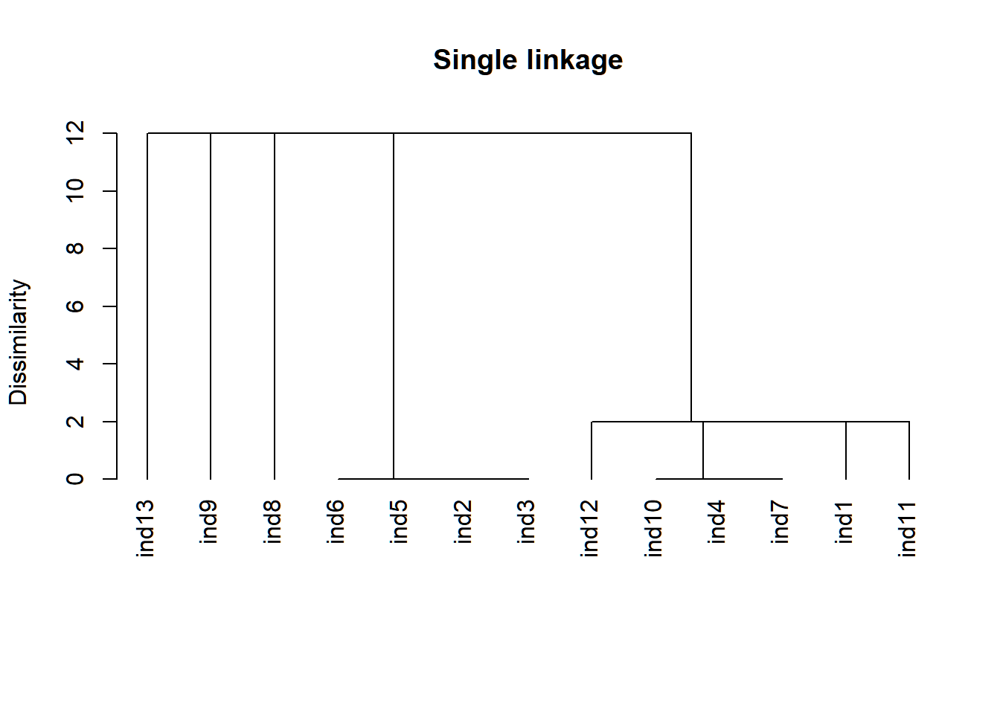
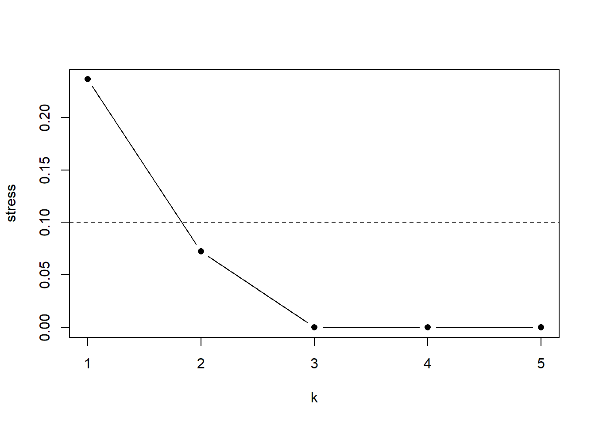
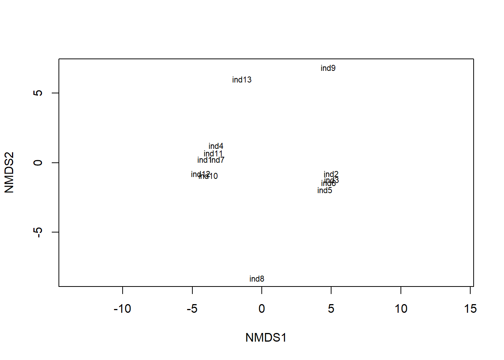
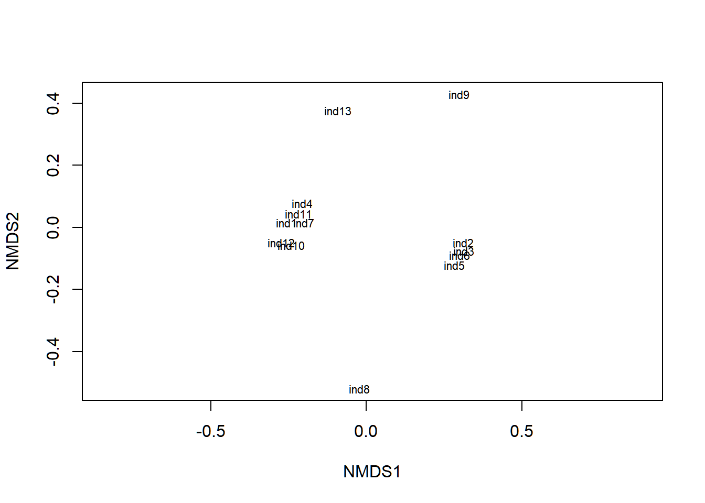
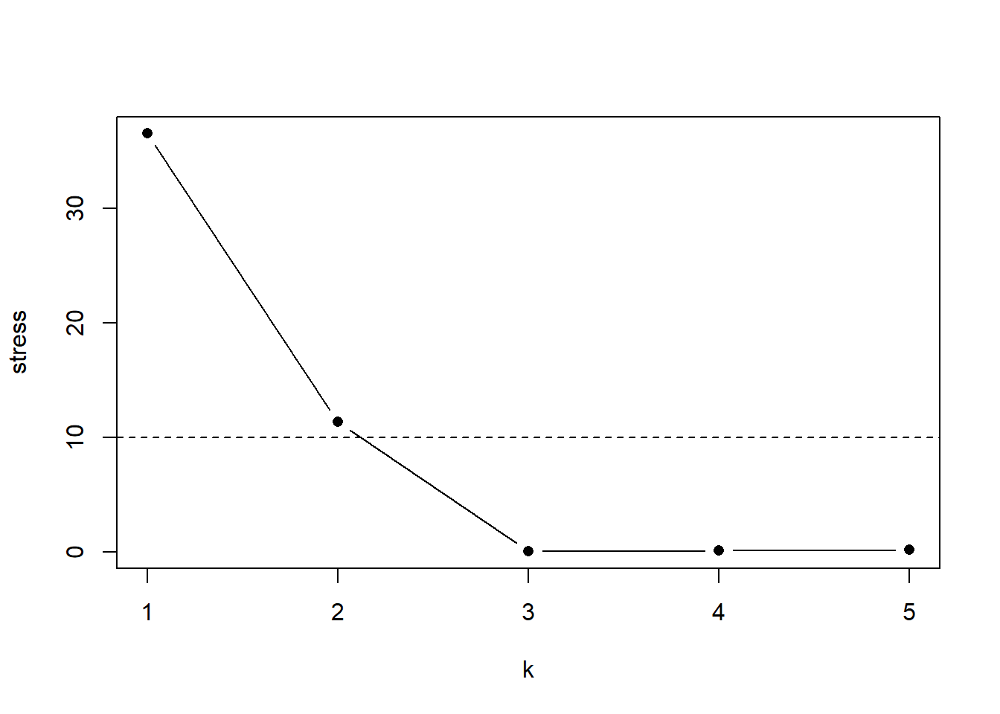
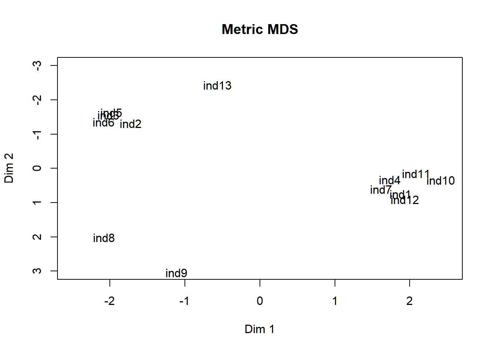
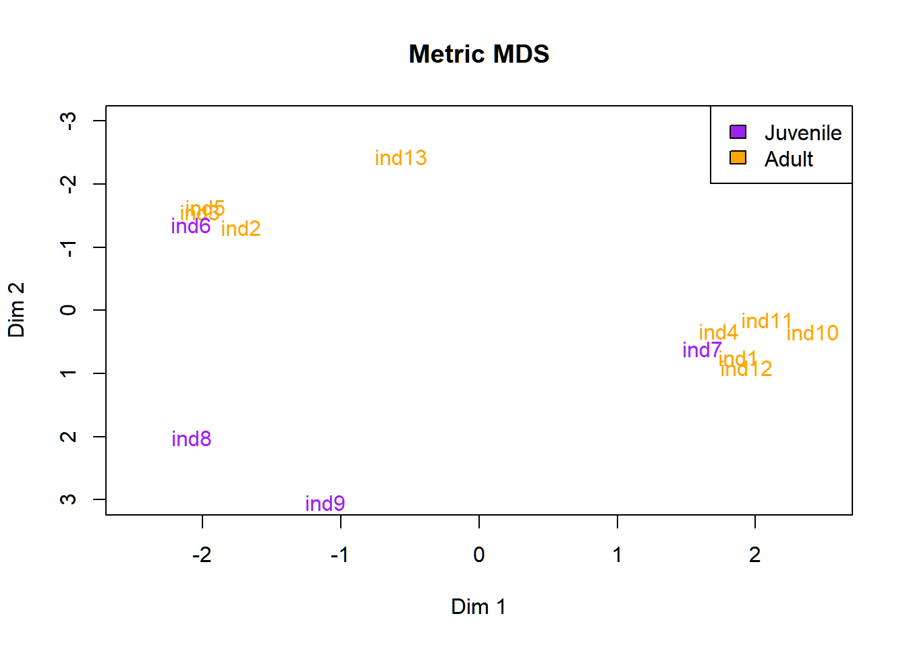
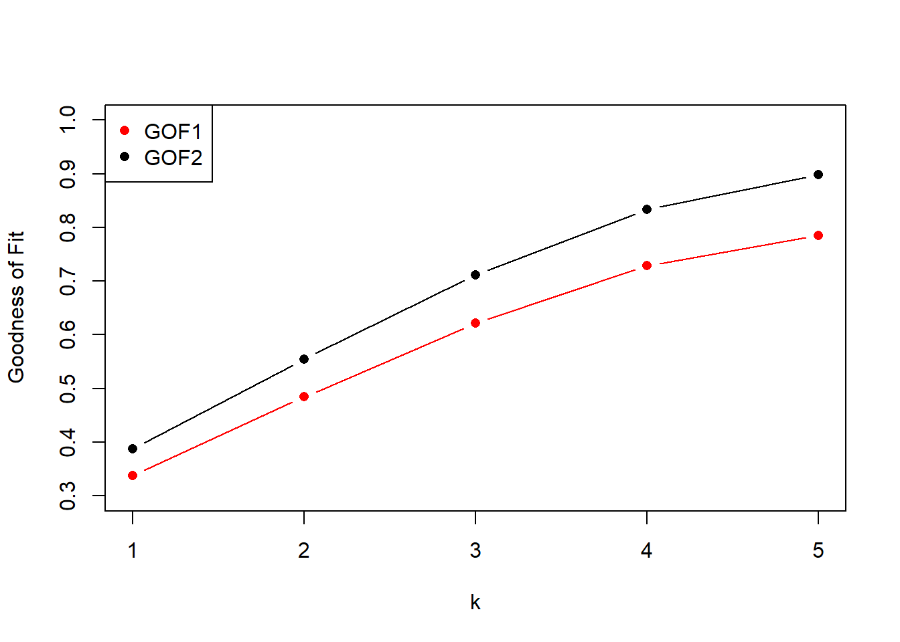
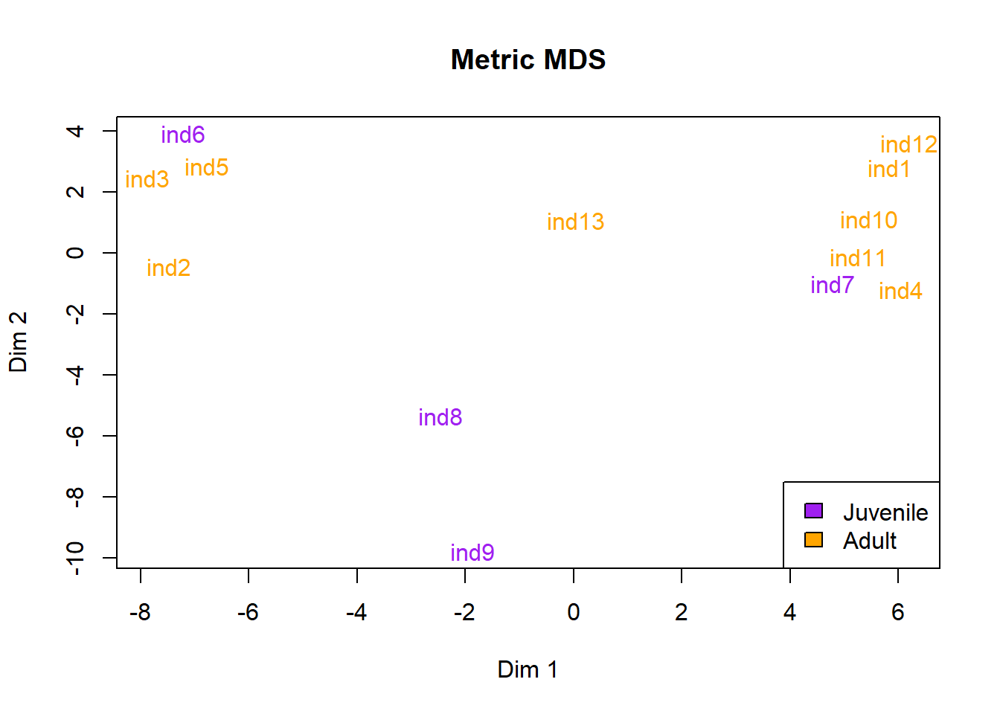
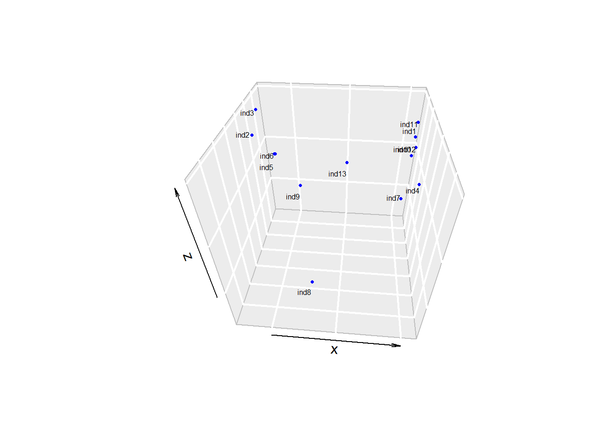

12Assignment 1c: Cluster Analysis and Multidimensional Scaling
This assignment is centered on cluster analysis and multidimensional scaling (MDS), which are both methods of measuring associations within a group (e.g. associations between individuals within a population).
For this tutorial, we’ll be using monkey.csv.
12.1 Looking at the data
You know the drill by now:
# Load in datadata =read.csv('monkey.csv', row.names =1) # First column is row namesdata # Print data
Our data is a matrix containing the number of social interactions observed between individuals in a group of monkeys at the zoo. The matrix is symmetrical - the top/right half is identical to the bottom/left half.
12.2 Calculating Dissimilarity
For this assignment we’ll be using 3 R functions: hclust, metaMDS (from the vegan package), isoMDS (from the MASSpackage), and cmdscale(). Let’s see what type of input data those functions need:
# Check help functionslibrary(vegan)library(MASS)?hclust()?metaMDS()?isoMDS()?cmdscale()
You’ll notice all of these functions require a dissimilarity matrix produced by dist. Let’s start by running dist().
# Convert data to a dist objectdist =as.dist(data)dist # Print dist
Now our data is in a dist object. All of the redundant entries in the data have been removed.
Right now, our data reflects similarity (i.e. high numbers reflect greater association between individuals). We need to convert it to dissimilarity. Dissimilarity is simply the opposite of similarity. We can convert similarity to dissimilarity by subtracting each data value from the maximum of the data.
# Convert to dissimilaritydist =max(dist) - distdist # Print dist
Remember from lecture there are 4 types of hierarchical cluster analysis:
Single linkage
Average linkage
Complete linkage
Ward linkage
Let’s run through them one by one:
12.3.1 Single linkage
We can run all 4 types of cluster analysis using the hclust() R function:
# run single linkage cluster analysisclust_1 =hclust(dist, method ='single')clust_1 # print object
Call:
hclust(d = dist, method = "single")
Cluster method : single
Number of objects: 13
Printing the hclust object doesn’t really tell us much. For more detail, we’re going to have to plot it:
# Plot single linkage treeplot(clust_1, hang =-1, main ='Single linkage', ylab ='Dissimilarity', # Label y axisxlab ='', sub ='') # Remove x-axis label

This outputs a tree showing the associations between our individual monkeys. dissimilarity is on the y-axis. The greater the distance between individuals on the y-axis, the greater their dissimilarity. Our tree has grouped the monkeys according to how frequently they interact with each other. For example. individuals 2, 3, 5, and 6 interact often, as evidenced by their low dissimilarity.
But how well does this tree fit the data? To answer that question, we need to calculate the cophenetic correlation coefficient (CCC):
# Calculate CCCcoph_1 =cophenetic(clust_1) # Get copheneticccc_1 =cor(coph_1, dist) # Calculate correlation of the cophenetic with the dataccc_1 # Print CCC
[1] 0.9036043
That’s a pretty high correlation coefficient, indicating our dendrogram represented the structure in the original data very well. Let’s try some other methods:
12.3.2 Average Linkage
# run cluster analysisclust_2 =hclust(dist, method ='average')# Plotplot(clust_2, hang =-1, main ='Average linkage', ylab ='Dissimilarity', xlab ='', sub ='')
# run cluster analysisclust_3 =hclust(dist, method ='complete')# Plotplot(clust_3, hang =-1, main ='Complete linkage', ylab ='Dissimilarity', xlab ='', sub ='')
# run cluster analysisclust_4 =hclust(dist, method ='ward.D')# Plotplot(clust_4, hang =-1, main ='Ward linkage', ylab ='Dissimilarity', xlab ='', sub ='')
Each method gives a slightly different tree and CCC value. Where are they similar? Where do they differ? Which one(s) would you trust? Why?
12.4 Multidimensional Scaling
Another method we can use to test for associations between our monkeys is multidimensional scaling (MDS). There are two types of MDS: non-metric, and metric MDS. Let’s start with non-metric MDS.
12.4.1 Non-Metric MDS
# Run non-metric MDS - metaMDSmds1 =metaMDS(dist, wascores = F)
Run 0 stress 0.07592385
Run 1 stress 0.072393
... New best solution
... Procrustes: rmse 0.2256244 max resid 0.6643281
Run 2 stress 0.07366297
Run 3 stress 0.07575137
Run 4 stress 0.07875788
Run 5 stress 0.07875788
Run 6 stress 0.07239302
... Procrustes: rmse 8.825331e-05 max resid 0.0001838556
... Similar to previous best
Run 7 stress 0.0757299
Run 8 stress 0.07875788
Run 9 stress 0.072393
... New best solution
... Procrustes: rmse 3.650427e-05 max resid 7.851435e-05
... Similar to previous best
Run 10 stress 0.1396043
Run 11 stress 0.08055014
Run 12 stress 0.0757299
Run 13 stress 0.08055023
Run 14 stress 0.07227846
... New best solution
... Procrustes: rmse 0.01248092 max resid 0.03084485
Run 15 stress 0.072393
... Procrustes: rmse 0.01245351 max resid 0.0309075
Run 16 stress 0.07575137
Run 17 stress 0.08055013
Run 18 stress 0.07366297
Run 19 stress 0.1180402
Run 20 stress 0.07875788
*** Best solution was not repeated -- monoMDS stopping criteria:
16: stress ratio > sratmax
4: scale factor of the gradient < sfgrmin
# Print mds resultsmds1
Call:
metaMDS(comm = dist, wascores = F)
global Multidimensional Scaling using monoMDS
Data: dist
Distance: user supplied
Dimensions: 2
Stress: 0.07227846
Stress type 1, weak ties
Best solution was not repeated after 20 tries
The best solution was from try 14 (random start)
Scaling: centring, PC rotation
Species: scores missing
By default, metaMDS has two dimensions. This MDS has a stress value of 0.072. Remember from lecture that stress < 0.10 is a “good representation”, so this MDS result is pretty good. If we want, we can test different numbers of dimensions (k) and create a scree plot to find the best one:
# Create a container objectscree =data.frame(k =1:5, stress =NA)# Loop through k 1 to 5for(k in1:5){# Run MDS mds =metaMDS(dist, wascores = F, k = k) # Set k to our loop index# Pull out stress scree[k,'stress'] = mds$stress # Fill kth row of the column 'stress' in scree} # End loop
# Make scree plotplot(stress ~ k, data = scree, # Plot stress against ktype ='b', # Lines and pointspch =16) # Point 16 (filled circle)abline(h =0.1, lty ='dashed') # Plot a dashed line at 0.1

We have an elbow at k=3, but we also get warnings that our dataset may be too small using k=3. The stress at k=2 is low enough that we can stick to using that.
Let’s plot our results:
# Plot resultplot(mds1, type ='t')
species scores not available

Here we’ve plotted the values of our two MDS dimensions against each other for each individual. Similar to the cluster analysis, we see certain individuals are grouped together. Is it the same groups of individuals? What does that tell you about your results?
Let’s try a different non-metric MDS function:
# Run non-metric MDS - isoMDSmds2 =isoMDS(dist)
Error in isoMDS(dist): zero or negative distance between objects 2 and 3
Uh oh. This function doesn’t like zeroes in the data. Let’s fix that by translating our data to proportions, and adding a small increment.
# Translate to proportionsdist2 = dist/max(dist)# Add an incrementdist2 = dist2 +0.0001# Print new distdist2
Let’s make sure this doesn’t mess with our results:
# Run non-metric MDS - metaMDSmds1 =metaMDS(dist2, wascores = F)
Run 0 stress 0.07575137
Run 1 stress 0.07239304
... New best solution
... Procrustes: rmse 0.225361 max resid 0.6639885
Run 2 stress 0.08575957
Run 3 stress 0.08055015
Run 4 stress 0.07875788
Run 5 stress 0.1802625
Run 6 stress 0.072393
... New best solution
... Procrustes: rmse 6.77624e-05 max resid 0.000147397
... Similar to previous best
Run 7 stress 0.07575137
Run 8 stress 0.1851728
Run 9 stress 0.07875788
Run 10 stress 0.07358653
Run 11 stress 0.07366297
Run 12 stress 0.07358653
Run 13 stress 0.08055013
Run 14 stress 0.120356
Run 15 stress 0.08571329
Run 16 stress 0.08569494
Run 17 stress 0.1183846
Run 18 stress 0.07366297
Run 19 stress 0.07239299
... New best solution
... Procrustes: rmse 2.662758e-05 max resid 5.894857e-05
... Similar to previous best
Run 20 stress 0.07239303
... Procrustes: rmse 8.53489e-05 max resid 0.0001888604
... Similar to previous best
*** Best solution repeated 2 times
# Print mds resultsmds1
Call:
metaMDS(comm = dist2, wascores = F)
global Multidimensional Scaling using monoMDS
Data: dist2
Distance: user supplied
Dimensions: 2
Stress: 0.07239299
Stress type 1, weak ties
Best solution was repeated 2 times in 20 tries
The best solution was from try 19 (random start)
Scaling: centring, PC rotation
Species: scores missing
# Plot resultplot(mds1, type ='t')
species scores not available

The values have shifted around a bit but the structure and interpretation of the plot is the same. Let’s continue on:
# Run non-metric MDS - isoMDSmds2 =isoMDS(dist2)
initial value 24.760322
iter 5 value 14.153502
iter 10 value 12.254154
iter 15 value 11.639473
iter 20 value 11.360460
final value 11.341572
converged
The modelling algorithms seems to be a little different, and we end up with a different stress result - in this case, one that is above the 10% threshold (note that stress is in % in this function, unlike metaMDS where it is in proportion). Let’s try another scree plot:
# Create a container objectscree =data.frame(k =1:5, stress =NA)# Loop through k 1 to 5for(k in1:5){# Run MDS mds =isoMDS(dist2, k = k) # Set k to our loop index# Pull out stress scree[k,'stress'] = mds$stress # Fill kth row of the column 'stress' in scree} # End loop
# Make scree plotplot(stress ~ k, data = scree, # Plot stress against ktype ='b', # Lines and pointspch =16) # Point 16 (filled circle)abline(h =10, lty ='dashed') # Plot a dashed line at 0.1

In this case, it seems we’re better off using 3 dimensions:
# Run non-metric MDS - isoMDSmds2 =isoMDS(dist2, k =3)
initial value 18.960422
iter 5 value 11.725940
iter 10 value 6.417141
iter 15 value 4.149185
iter 20 value 1.466748
iter 25 value 0.764657
iter 30 value 0.449114
iter 35 value 0.302911
iter 40 value 0.156116
iter 45 value 0.087536
iter 50 value 0.046144
final value 0.046144
stopped after 50 iterations
All of our grouped individuals are plotted on top of each other. Let’s try adding some random jiggle so we can see them
# Plot isoMDSplot(mds2$points[,1], mds2$points[,2], # MDS dimension 1 and 2 valuestype ='n', # Don't plot any pointsxlab ='Dim 1', ylab ='Dim 2', main ='Metric MDS', # Labellingxlim =c(-2.5, 2.5), ylim =c(3, -3)) # Set axis limits# Set random seed for consistencyset.seed(1212)# Plot individual namestext(mds2$points[,1] +rnorm(13, 0, 0.2), # Add random values pulled from a mds2$points[,2] +rnorm(13, 0, 0.2), # normal distribution with mean 0, sd 0.2rownames(data)) # Add names

That’s a bit better. We can also add some color to this plot if we want - say, individuals 6 to 9 are juveniles:
# Plot isoMDSplot(mds2$points[,1], mds2$points[,2], # MDS dimension 1 and 2 valuestype ='n', # Don't plot any pointsxlab ='Dim 1', ylab ='Dim 2', main ='Metric MDS', # Labellingxlim =c(-2.5, 2.5), ylim =c(3, -3)) # Set axis limits# Set random seed for consistencyset.seed(1212)# Juvenile identifierad =c(rep(1,5), rep(0,4), rep(1,4)) # ad is 1 for first 5 and last 4ad
[1] 1 1 1 1 1 0 0 0 0 1 1 1 1
# Plot individual namestext(mds2$points[,1] +rnorm(13, 0, 0.2), # Add random values pulled from a mds2$points[,2] +rnorm(13, 0, 0.2), # normal distribution with mean 0, sd 0.2rownames(data), # Add namescol =ifelse(ad ==0, 'purple', 'orange')) # color # Add a legendlegend('topright', legend =c('Juvenile', 'Adult'), fill =c('purple', 'orange'))

Does this plot match the previous one, and/or the cluster analyses?
12.4.2 Metric MDS
We can run metric MDS using the cmdscale() function:
For metric MDS, we look at goodness of fit (GOF) instead of stress to assess how well the analysis worked. GOF is similar to an R2 value, where numbers closer to 1 indicate a better fit (though be wary of overfitting!). There are two different GOF values for each metric MDS.
As with the other MDS functions, k defaults to 2. We can make another scree plot:
# Create a container objectscree =data.frame(k =1:5, GOF1 =NA, GOF2 =NA)# Loop through k 1 to 5for(k in1:5){# Run MDS mds =cmdscale(dist, eig = T, k = k) # Set k to our loop index# Pull out stress scree[k,c(2,3)] = mds$GOF # Fill kth row of the GOF columns in scree} # End loop
# Make scree plotplot(GOF2 ~ k, data = scree, # Plot stress against ktype ='b', # Lines and pointspch =16, # Point 16 (filled circle)ylab ='Goodness of Fit', ylim =c(0.3, 1))points(GOF1 ~ k, data = scree, type ='b', pch =16, col ='red') # Add second GOF valueabline(h =0.1, lty ='dashed') # Plot a dashed line at 0.1legend('topleft', pch =16, legend =c('GOF1', 'GOF2'), col =c('red', 'black')) # Add legend

Goodness of fit scales linearly, so what k to use is more of a judgement call.
# run metric MDSmds3 =cmdscale(dist, k=4, eig = T)mds3
# Plot metric MDSplot(mds3$points[,1], mds3$points[,2], # MDS dimension 1 and 2 valuestype ='n', # Don't plot any pointsxlab ='Dim 1', ylab ='Dim 2', main ='Metric MDS') # Labelling# Plot individual namestext(mds3$points[,1], # Add random values pulled from a mds3$points[,2], # normal distribution with mean 0, sd 0.2rownames(data), # Add namescol =ifelse(ad ==0, 'purple', 'orange')) # color # Add a legendlegend('bottomright', legend =c('Juvenile', 'Adult'), fill =c('purple', 'orange'))

12.4.3 3D Plotting (Optional)
It may not be necessary, but if your MDS has more than 2 dimensions, you can try plotting it in three dimensions and see if it helps:
library(plot3D)# Prepare data to plotx = mds3$points[,1]y = mds3$points[,2]z = mds3$points[,3]# Create 3D plotscatter3D(x,y,z, colvar =NULL, col ='blue', pch =16, cex =0.5, bty ='g', theta =5)# Add texttext3D(x, # Add some jiggle to the labels y+rnorm(13, mean =0, sd =0.5), z +rnorm(13, mean =0, sd =0.5), labels =names(mds3$points[,1]), add = T, colkey = F, cex =0.5, adj =1, d =2)

12.5 Mantel Test (Graduate Students Only)
We can infer to some extent whether juveniles and adults preferentially associate with each other from our colored MDS plots, but we can also test it statistically using a Mantel test. To run the Mantel test, we need to convert our adult index into a dist object:
# Create dist matrix for adultsad_dist =dist(ad)ad_dist
Note this is dissimilarity: adult-juvenile pairs are assigned 1, and same-class pairs are assigned 0.
The Mantel test looks for correlation between this matrix and our original dissociation matrix, and statistically tests if the associations are different from what we would expect due to chance.
# Run mantel testlibrary(ade4)mantel.rtest(ad_dist, dist, nrepet =999)
Warning in is.euclid(m1): Zero distance(s)
Warning in is.euclid(m2): Zero distance(s)
Monte-Carlo test
Call: mantelnoneuclid(m1 = m1, m2 = m2, nrepet = nrepet)
Observation: 0.1686576
Based on 999 replicates
Simulated p-value: 0.073
Alternative hypothesis: greater
Std.Obs Expectation Variance
1.369210491 -0.001062026 0.015364686
It’s very close, but we don’t have statistically significant evidence that juveniles and adults associate preferentially with each other in this case.
12.6 Tips for your Assignment:
Some things you may want to think about for your assignment:
1. How would you pick which cluster analyses and MDS analyses are best for your data? Are they conceptual, or do they have to do with the results? Do they agree?
2. How would you interpret your statistical results biologically? You don’t have to be right, but don’t be vague, and don’t contradict your results.